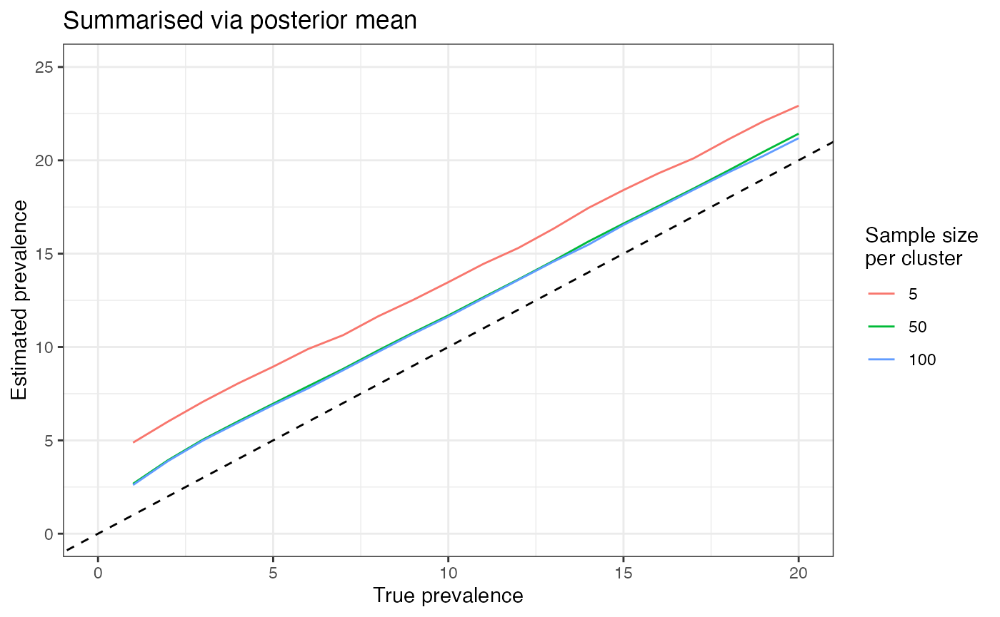

vignettes/summarise_prevalence.Rmd
summarise_prevalence.RmdThe get_prevalence() function calculates the full
posterior distribution of the prevalence, but then it usually returns
just a summary of this distribution. There are many summaries that we
could choose, for example, we might be tempted to take the posterior
mean. But how good a summary is this? The plot below shows the posterior
mean for the 6-cluster case compared with the true prevalence used in
simulation, averaged over 1000 simulations. If the method is unbiased
then the coloured lines should match the 1:1 line (dashed):

We can see from this plot that the posterior mean doesn’t match the 1:1 line very well, rather it tends to overestimate the prevalence. This is a particular problem when cluster sizes are very small (e.g. 5), but the issue remains with larger sizes (e.g. 100). What does this mean for our Bayesian method?
To understand this, it’s worth looking at the complete posterior
distribution for a single simulation. We can obtain this distribution
directly from the get_prevalence() function by setting
post_full_on = TRUE. The following plot is for 6 clusters,
each containing 5 positives out of 50 samples.
The dashed line gives the basic estimate we would obtain from the raw data (30 / 300 = 10% prevalence). Notice that all three Bayesian estimates of central tendency are higher than this 10% value. There are a number of reasons for this, including the skew of the distribution and the priors that we assume. But the most important take-home from this plot is that the prevalence has a good chance of being anywhere inside the body of this distribution, and so we shouldn’t rely too much on any single central estimate. In other words, if the 95% CrI says that prevalence is likely between 6.5% and 16% then this is the plausible range we should consider, and whether our central estimate is 10% or 10.3% is less important.
That being said, there are some cases where we need a central estimate, and in this case we recommend using the MAP estimate. The plot below explores the bias of the MAP estimate:
Some bias remains for 5 samples per cluster, but for larger sample sizes the bias is very small.